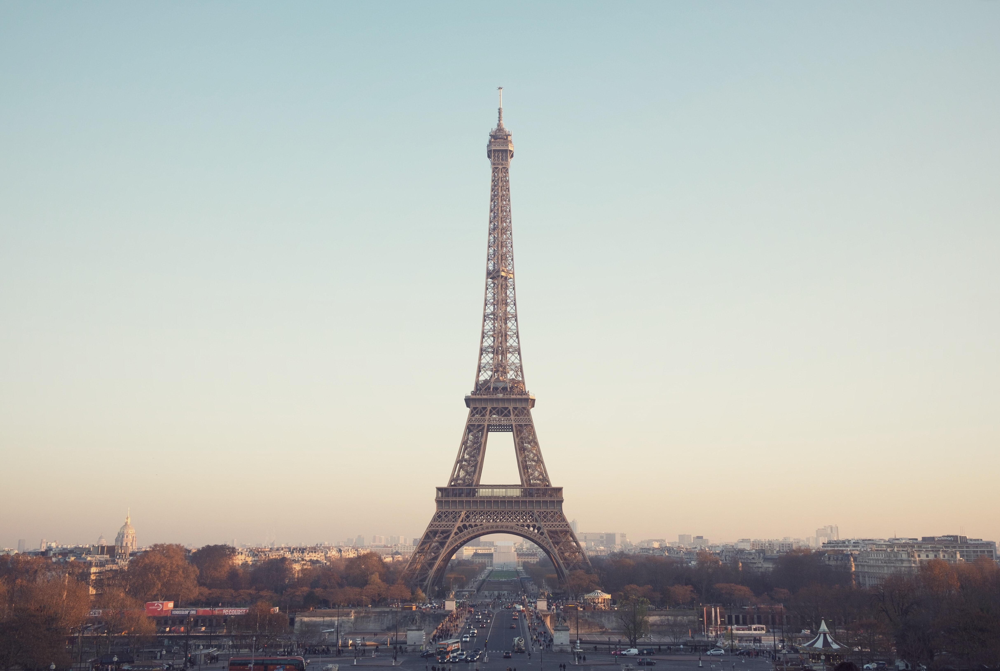
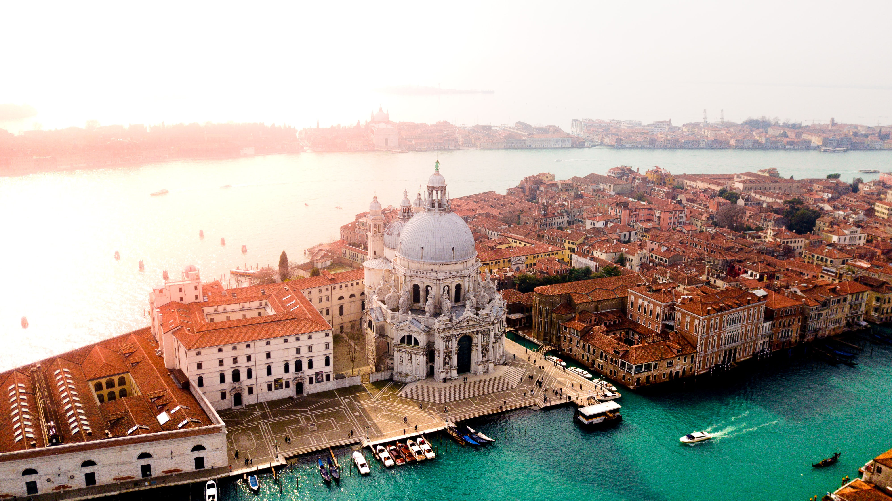
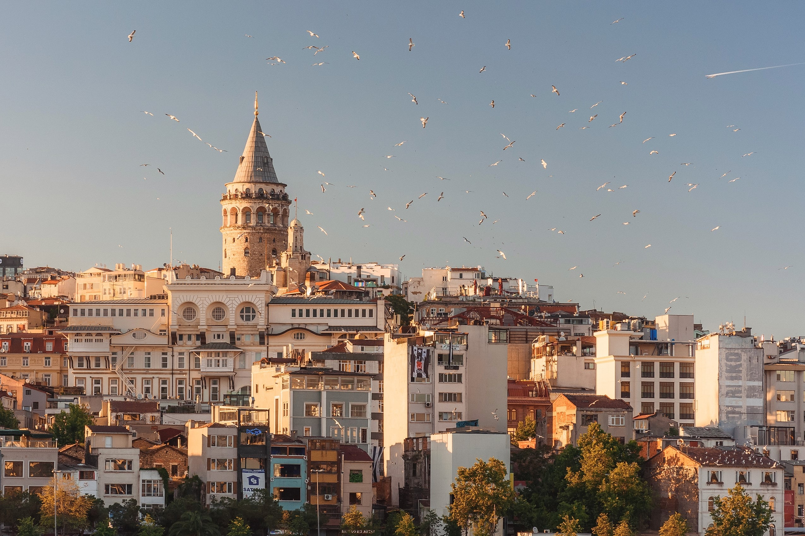
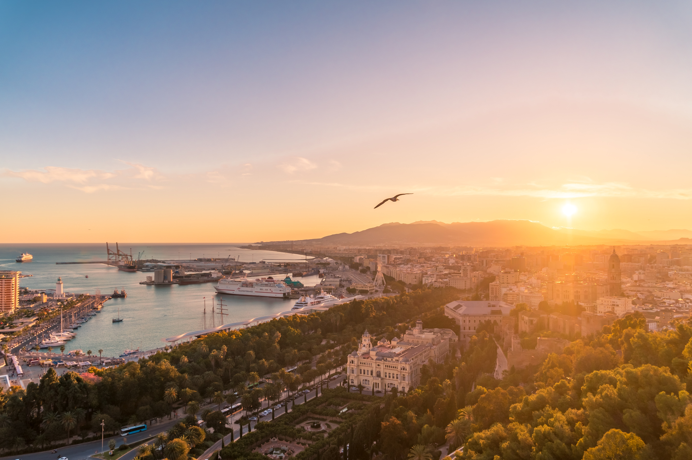
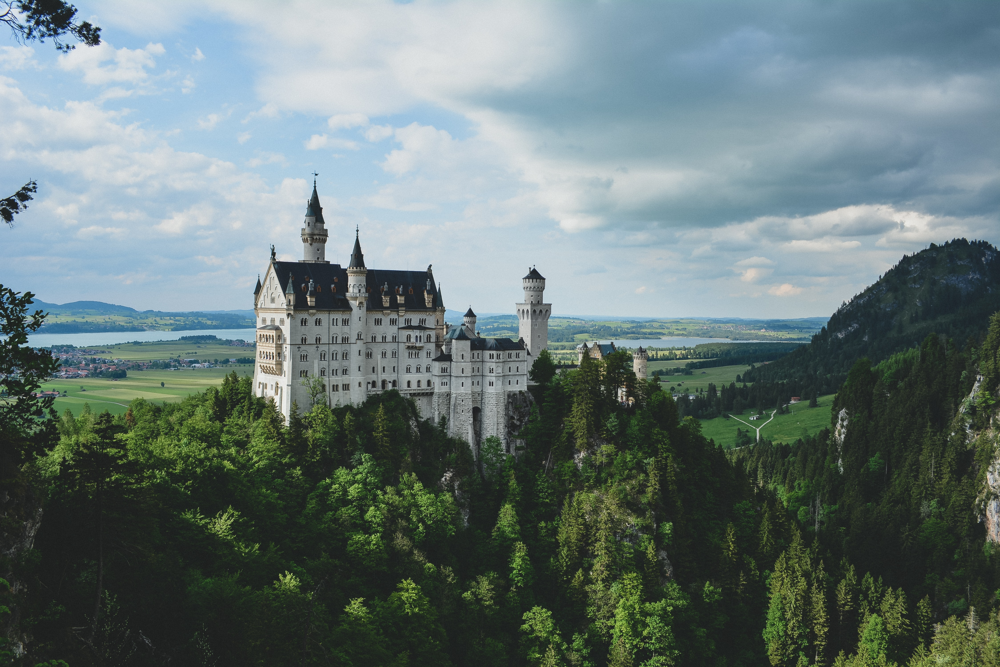
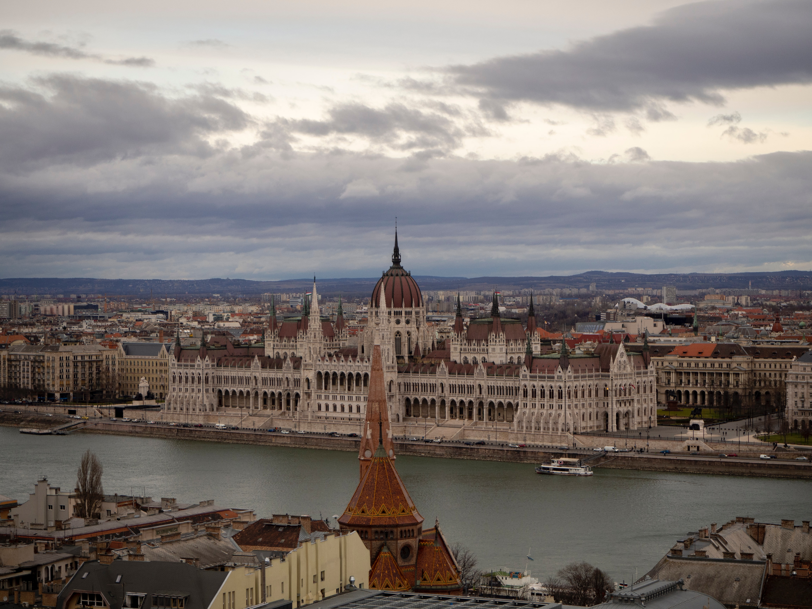

Куда поедем
-
 7 дней 13 человек
7 дней 13 человек13 апреля
Япония
Страна Восходящего Солнца - Ниппон - так звучит название Японии на японском языке.
-

4 дня 3 человека
15 мая
Франция
Франция — одна из немногих стран, на территории которой сконцентрированы самые разные пейзажи — от песчаных золотистых пляжей до заснеженных вершин Альп.
-

3 дня 10 человек
19 июня
Италия
Италия является одной из самых интересных, уникальных, красивых стран в мире.
-

5 дней 11 человек
23 июля
Турция
Великолепный Стамбул с Голубой мечетью и дворцом Топкапы.
-
 7 дней 5 человек
7 дней 5 человек18 августа
Словакия
Словакия – страна, в которой нет мегаполисов, зато много горнолыжных курортов.
-

3 дня 6 человек
15 сентября
Испания
Испания - одна из древнейших культур мира с богатым наследием.
-

5 дней 10 человек
25 сентября
Германия
Германия удивляет многообразием и красотой природы: на Северном и Балтийском морях простираются гряды островов с песчаными пляжами и дюнами, а вдоль побережья - вересковые пустоши и болота.
-

3 дня 11 человек
23 октября
Венгрия
Венгрия, страна, где расположена одна из красивейших столиц мира - Будапешт, "жемчужина Дуная", центральная панорама которого занесена в список "Всемирного наследия человечества" ЮНЕСКО.